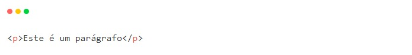

HTML

Seu nome tem origem do inglês Hyper Text Markup Language, que significa “linguagem de marcação de hipertexto”.
Como assim “linguagem de marcação”? Pois é, o HTML não é considerado uma linguagem de programação como as demais e você já vai descobrir o motivo disso.
Imagine uma página web, como essa mesmo que você esta lendo agora. É possível perceber que existem diversos elementos separados, como cabeçalho, título, parágrafos, imagens e muitos outros. Toda a organização desses elementos é feita pelo HTML. Ele é utilizado para criar toda a estrutura da página e, para isso, utiliza as famosas tags (etiquetas) para sinalizar onde cada tipo de elemento será implementado.
Por exemplo, se você deseja inserir um parágrafo na tela, poderá utilizar a tag {p} para isso, colocando o texto desejado dentro do elemento, como mostrado abaixo:
Sendo assim, existem diversas tags de diversas estruturas para montar o esqueleto da página. Mas, como é possível deixar esse parágrafo azul? Ou mudar a fonte da letra? Aí entra a nossa próxima tecnologia: CSS.